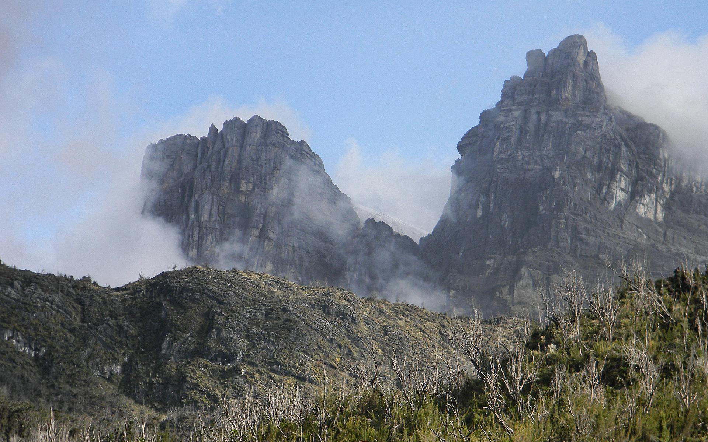
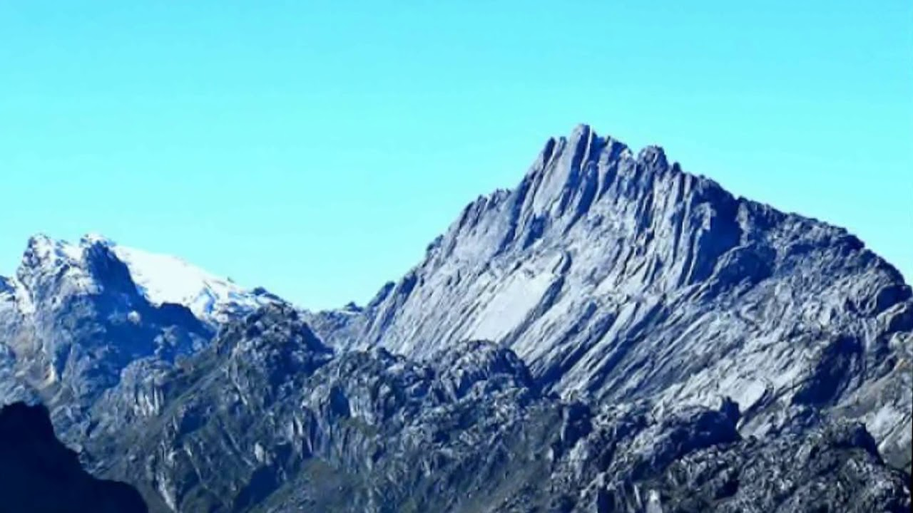

Najwyższe szczyty Australii
Kontynenty


Puncak Jaya
- Wysokość: 4 807,81 m
- Kraj: Francja, Włochy
- Pasmo: Masyw Mont Blanc
- Wybitność: 4 697 m
- Pierwsze wejście: 8 sierpnia 1786 - Jacques Balmat,
Michel Paccard - Współrzędne: 45°49′58,21″N 6°51′52,88″E
Puncak Mandala
- Wysokość: 4 634 m
- Kraj: Szwajcaria
- Pasmo: Alpy Pennińskie, Monte Rosa
- Wybitność: 2 165 m
- Pierwsze wejście: 1855 - Charles Hudson, J. Smyth, C. Smyth
- Współrzędne: 45°56′12″N 7°53′01″E